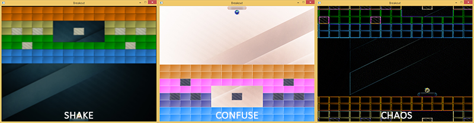

后期处理
| 原文 | Postprocessing |
|---|---|
| 作者 | JoeydeVries |
| 翻译 | 包纸 |
| 校对 | 暂无 |
Note
本节暂未进行完全的重写，错误可能会很多。如果可能的话，请对照原文进行阅读。如果有报告本节的错误，将会延迟至重写之后进行处理。
如果我们可以通过几个后期处理(Postprocess)特效丰富Breakout游戏的视觉效果的话，会不会是一件很有趣的事情？利用OpenGL的帧缓冲，我们可以相对容易地创造出模糊的抖动效果、反转场景里的所有颜色、做一些“疯狂”的顶点运动、或是使用一些其他有趣的特效。
在教程的帧缓冲章节里，我们演示了如何使用单个纹理，通过后期处理特效实现有趣的效果（反相、灰度、模糊、锐化、边缘检测）。在Breakout中我们将做一些类似的事情：我们会创建一个帧缓冲对象，并附带一个多重采样的渲染缓冲对象作为其颜色附件。游戏中所有的渲染相关代码都应该渲染至这个多重采样的帧缓冲，然后将其内容传输(Bit blit)至一个不同的帧缓冲中，该帧缓冲用一个纹理作为其颜色附件。这个纹理会包含游戏的渲染后的抗锯齿图像，我们对它应用零或多个后期处理特效后渲染至一个大的2D四边形。（译注：这段表述的复杂流程与教程帧缓冲章节的内容相似，原文中包含大量易混淆的名词与代词，建议读者先仔细理解帧缓冲章节的内容与流程）。
总结一下这些渲染步骤：
- 绑定至多重采样的帧缓冲
- 和往常一样渲染游戏
- 将多重采样的帧缓冲内容传输至一个普通的帧缓冲中（这个帧缓冲使用了一个纹理作为其颜色缓冲附件）
- 解除绑定（绑定回默认的帧缓冲）
- 在后期处理着色器中使用来自普通帧缓冲的颜色缓冲纹理
- 渲染屏幕大小的四边形作为后期处理着色器的输出
我们的后期处理着色器允许使用三种特效：shake, confuse和chaos。
- shake：轻微晃动场景并附加一个微小的模糊效果。
- shake：反转场景中的颜色并颠倒x轴和y轴。
- chaos: 利用边缘检测卷积核创造有趣的视觉效果，并以圆形旋转动画的形式移动纹理图片，实现“混沌”特效。
以下是这些效果的示例：

在2D四边形上操作的顶点着色器如下所示：
#version 330 core
layout (location = 0) in vec4 vertex; // <vec2 position, vec2 texCoords>
out vec2 TexCoords;
uniform bool chaos;
uniform bool confuse;
uniform bool shake;
uniform float time;
void main()
{
gl_Position = vec4(vertex.xy, 0.0f, 1.0f);
vec2 texture = vertex.zw;
if(chaos)
{
float strength = 0.3;
vec2 pos = vec2(texture.x + sin(time) * strength, texture.y + cos(time) * strength);
TexCoords = pos;
}
else if(confuse)
{
TexCoords = vec2(1.0 - texture.x, 1.0 - texture.y);
}
else
{
TexCoords = texture;
}
if (shake)
{
float strength = 0.01;
gl_Position.x += cos(time * 10) * strength;
gl_Position.y += cos(time * 15) * strength;
}
}
基于uniform是否被设置为true，顶点着色器可以执行不同的分支。如果chaos或confuse被设置为true，顶点着色器将操纵纹理坐标来移动场景（以圆形动画变换纹理坐标或反转纹理坐标）。因为我们将纹理环绕方式设置为了GL_REPEAT，所以chaos特效会导致场景在四边形的各个部分重复。除此之外，如果shake被设置为true，它将微量移动顶点位置。需要注意的是，chaos与confuse不应同时为true，而shake则可以与其他特效一起生效。
当任意特效被激活时，除了偏移顶点的位置和纹理坐标，我们也希望创造显著的视觉效果。我们可以在片段着色器中实现这一点：
#version 330 core
in vec2 TexCoords;
out vec4 color;
uniform sampler2D scene;
uniform vec2 offsets[9];
uniform int edge_kernel[9];
uniform float blur_kernel[9];
uniform bool chaos;
uniform bool confuse;
uniform bool shake;
void main()
{
color = vec4(0.0f);
vec3 sample[9];
// 如果使用卷积矩阵，则对纹理的偏移像素进行采样
if(chaos || shake)
for(int i = 0; i < 9; i++)
sample[i] = vec3(texture(scene, TexCoords.st + offsets[i]));
// 处理特效
if(chaos)
{
for(int i = 0; i < 9; i++)
color += vec4(sample[i] * edge_kernel[i], 0.0f);
color.a = 1.0f;
}
else if(confuse)
{
color = vec4(1.0 - texture(scene, TexCoords).rgb, 1.0);
}
else if(shake)
{
for(int i = 0; i < 9; i++)
color += vec4(sample[i] * blur_kernel[i], 0.0f);
color.a = 1.0f;
}
else
{
color = texture(scene, TexCoords);
}
}
这个着色器几乎直接构建自帧缓冲教程的片段着色器，并根据被激活的特效类型进行相应的后期处理。这一次，偏移矩阵(offset matrix)和卷积核作为uniform变量，由应用程序中的代码定义。好处是我们只需要设置这些内容一次，而不必在每个片段着色器执行时重新计算这些矩阵。例如，偏移矩阵的配置如下所示：
GLfloat offset = 1.0f / 300.0f;
GLfloat offsets[9][2] = {
{ -offset, offset }, // 左上
{ 0.0f, offset }, // 中上
{ offset, offset }, // 右上
{ -offset, 0.0f }, // 左中
{ 0.0f, 0.0f }, // 正中
{ offset, 0.0f }, // 右中
{ -offset, -offset }, // 左下
{ 0.0f, -offset }, // 中下
{ offset, -offset } // 右下
};
glUniform2fv(glGetUniformLocation(shader.ID, "offsets"), 9, (GLfloat*)offsets);
由于所有管理帧缓冲器的概念已经在之前的教程中有过广泛的讨论，所以这次我不会深入其细节。下面是
有趣的是
PostProcessor *Effects;
void Game::Render()
{
if (this->State == GAME_ACTIVE)
{
Effects->BeginRender();
// 绘制背景
// 绘制关卡
// 绘制挡板
// 绘制粒子
// 绘制小球
Effects->EndRender();
Effects->Render(glfwGetTime());
}
}
无论我们需要什么，我们只需要将需要的
Shake it
作为这些效果的演示，我们将模拟球击中坚固的混凝土块时的视觉冲击。无论在哪里发生碰撞，只要在短时间内实现晃动(shake)效果，便能增强撞击的冲击感。
我们只想允许晃动效果持续一小段时间。我们可以通过声明一个持有晃动效果持续时间的变量ShakeTime来实现这个功能。无论碰撞何时发生，我们将这个变量重置为一个特定的持续时间:
GLfloat ShakeTime = 0.0f;
void Game::DoCollisions()
{
for (GameObject &box : this->Levels[this->Level].Bricks)
{
if (!box.Destroyed)
{
Collision collision = CheckCollision(*Ball, box);
if (std::get<0>(collision)) // 如果发生了碰撞
{
// 如果不是实心的砖块则摧毁
if (!box.IsSolid)
box.Destroyed = GL_TRUE;
else
{ // 如果是实心的砖块则激活shake特效
ShakeTime = 0.05f;
Effects->Shake = true;
}
[...]
}
}
}
[...]
}
然后在游戏的
void Game::Update(GLfloat dt)
{
[...]
if (ShakeTime > 0.0f)
{
ShakeTime -= dt;
if (ShakeTime <= 0.0f)
Effects->Shake = false;
}
}
这样，每当我们碰到一个实心砖块时，屏幕会短暂地抖动与模糊，给玩家一些小球与坚固物体碰撞的视觉反馈。
你可以在这里找到更新后的
在下一章关于“道具”的教程中我们将带来另外两种的特效的使用。